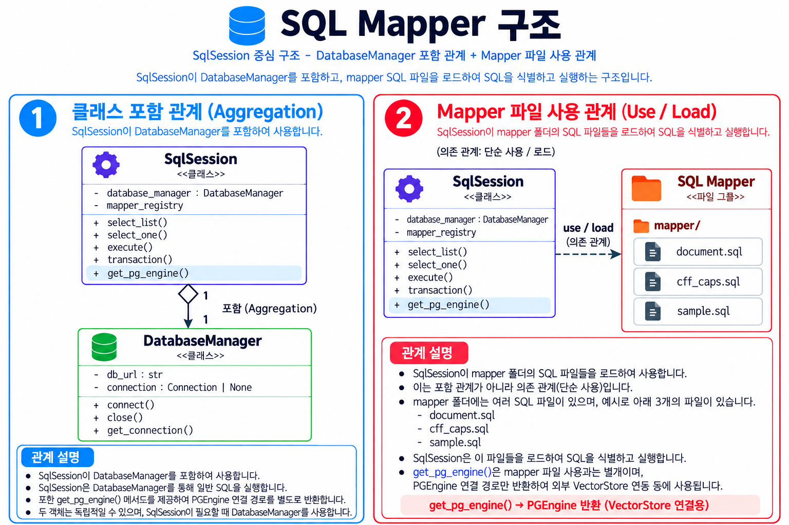
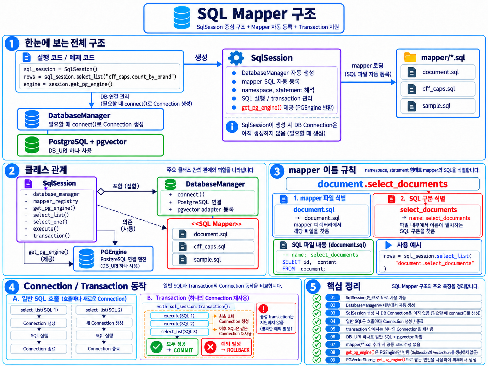

SQL / SqlSession 사용 가이드¶
이 페이지는 현재 group_project/common/sql_session.py 와 car_search_rag/car_search/coffee_search.sql 을 기준으로 Mapper를 추가·호출하는 방법을 설명합니다. 전체 업무 흐름은 개발 공통 가이드, 실행 환경은 시작하기 에 있습니다.
SqlSession, DatabaseManager, SQL 파일¶


SqlSession 은 DatabaseManager 인스턴스를 보유합니다. 생성 시 MAPPER_ROOT 인 group_project/ 아래의 모든 *.sql 을 재귀적으로 aiosql에 등록하지만 DB 연결은 이때 열지 않습니다. SQL 파일은 별도의 mapper/ 폴더가 아니라 각 기능 폴더에 있습니다. 그림 속 mapper/, mapper_registry 와 예시 파일명은 현재 소스의 실제 경로·속성 이름이 아닙니다. 실제 등록 상태는 mappers 와 mapper_paths 에 보관합니다.
DatabaseManager 는 외부에서 주입할 수 있고, 전달하지 않으면 SqlSession 이 직접 생성합니다. 독립적으로 존재할 수 있으므로 그림의 빈 다이아는 합성(Composition)이 아닌 집합(Aggregation) 관계를 나타냅니다.
DatabaseManager.connect() 는 DB_URL 로 새 psycopg 연결을 만들고 register_vector() 로 pgvector 타입을 등록합니다. 조회 결과는 기본적으로 camelCase 키의 dict이며 SqlSession(camel_case_keys=False) 면 원래 컬럼명 키를 유지합니다. SqlSession.get_pg_engine() 은 DB_URL 로 PGEngine 을 지연 생성·재사용하지만 현재 Coffee Search의 SQL 경로에서는 호출하지 않습니다.
Mapper 이름과 SQL 추가¶
SQL 파일의 파일 stem 이 namespace이고 -- name: 뒤 이름이 statement입니다. 실제 파일 coffee_search.sql 의 다음 SQL은 coffee_search.select_machine 으로 호출합니다.
-- name: select_machine
SELECT CFF_MACH_ID AS ID
FROM PUBLIC.CFF_MACH
WHERE CFF_MACH_BRAND = :BRAND
AND CFF_MACH_NM = :MACHINE_NAME
ORDER BY CFF_MACH_ID
LIMIT 1;
machine = session.select_one(
"coffee_search.select_machine",
{"BRAND": brand, "MACHINE_NAME": machine_name},
)
:BRAND 와 :MACHINE_NAME 은 전달 dict의 키와 맞춰야 합니다. 변경 SQL의 -- name: insert_machine! 처럼 ! 를 붙여 정의하더라도 Python 호출 ID는 coffee_search.insert_machine 입니다. 같은 파일명 stem의 SQL 파일이 여러 곳에 있으면 등록 시 중복 오류가 납니다. 새 SQL을 추가하면 Service에서 이 ID를 호출하고 진입점에서 Service 동작을 연결하세요.
실행 메서드¶
select_list(statement_id, parameters): 조회 결과를 모두 읽어 dict 목록으로 반환합니다. 지연 조회 결과도 연결을 닫기 전에 목록으로 확정합니다.select_one(...):select_list()의 첫 행 또는None을 반환합니다. SQL에LIMIT 1을 자동으로 붙이지 않으므로 필요한 경우 Mapper SQL에 직접 적습니다.execute(...): 변경문 등을 실행하고 aiosql 결과를 반환합니다. 지연 결과가 나오면 목록으로 확정합니다.execute_many(statement_id, parameters_list): 빈 목록이면 0을 반환하고, 그 외에는cursor.executemany(query.sql, parameters_list)로 배치 실행한 뒤rowcount를 반환합니다. Coffee Search의insert_machine_detail이 이를 사용합니다.transaction(): 아래의 여러 SQL을 하나의 연결·작업 단위로 묶습니다. 중첩 호출은 지원하지 않습니다.
Batch 실행 - execute_many()¶
같은 SQL을 여러 데이터에 적용할 때 execute() 를 반복 호출하는 대신 execute_many() 를 사용할 수 있습니다. 여러 행 INSERT·UPDATE·DELETE, PDF/RAG 처리 후 생성한 여러 chunk와 embedding/vector 저장에 사용합니다.
메서드 |
전달 파라미터 |
실행 방식과 용도 |
|---|---|---|
|
dict 한 건 |
SQL 한 번 실행. 일반적인 단건 INSERT·UPDATE·DELETE. |
|
dict 여러 건이 담긴 list |
동일 SQL을 배치 실행. 여러 행 INSERT·UPDATE·DELETE. |
execute_many() 의 두 번째 인수는 dict 한 개가 아니라 dict 목록 입니다. 각 dict의 키는 SQL 파일의 바인딩 파라미터와 맞춥니다. 다음 예제는 실제 coffee_search.insert_machine_detail 에 필요한 키를 사용합니다. machine_id, user_id, embeddings 는 앞 단계에서 준비한 값입니다.
parameters_list = [
{
"CFF_MACH_ID": machine_id,
"PAGE_NO": "1",
"TEXT": "첫 번째 내용",
"EMBEDDING": Vector(embeddings[0]),
"USER_ID": user_id,
},
{
"CFF_MACH_ID": machine_id,
"PAGE_NO": "2",
"TEXT": "두 번째 내용",
"EMBEDDING": Vector(embeddings[1]),
"USER_ID": user_id,
},
]
# 한 건만 실행할 때
session.execute("coffee_search.insert_machine_detail", parameters_list[0])
# 같은 SQL을 여러 건에 적용할 때
session.execute_many("coffee_search.insert_machine_detail", parameters_list)
개념적으로 SQL 1개 + 파라미터 N건 → cursor.executemany() → 배치 실행 입니다. 목록이 비어 있으면 실행하지 않고 0을 반환합니다. 그 외에는 cursor.rowcount 를 반환하며, 이 값은 입력 목록 길이와 다를 수 있습니다.
여러 변경을 하나의 작업 단위로 처리하려면 transaction() 안에서 단건과 배치를 함께 호출합니다. 블록 안에서는 연결을 재사용하고 정상 종료하면 COMMIT, 예외가 전파되면 ROLLBACK합니다.
with session.transaction():
session.execute(
"coffee_search.delete_machine_details",
{"CFF_MACH_ID": machine_id},
)
session.execute_many(
"coffee_search.insert_machine_detail",
parameters_list,
)
INFO 로그가 활성화되어 있으면 실행 전에 BATCH QUERY 와 BATCH PARAMS 에 SQL 및 모든 건의 파라미터를 [1/N] 형태의 순번과 함께 기록하고, 실행 후 BATCH DONE 에 전체 배치 건수와 시간을 기록합니다. 긴 Vector 또는 숫자 embedding은 앞 6개 값만 표시하고 나머지는 ... 으로 줄입니다. 예를 들어 <VECTOR [0.012345, -0.045678, 0.098765, ...] dimension=1536> 형태입니다. 축약은 로그에만 적용되며 DB에는 원본 Vector 전체가 전달됩니다.
Connection과 Transaction¶


일반 select_list()·execute() 는 호출마다 새 연결을 열어 SQL을 실행한 뒤 닫습니다. select_one() 은 내부적으로 select_list() 를 사용합니다. transaction() 블록은 연결을 한 번 열어 내부 조회·변경·배치 SQL에서 재사용합니다. 블록이 정상 종료되면 COMMIT, 예외가 전파되면 ROLLBACK하며 마지막에 연결을 닫습니다. 따라서 여러 변경이 함께 성공하거나 실패해야 할 때 사용합니다.
with session.transaction():
session.execute(
"coffee_search.delete_machine_details",
{"CFF_MACH_ID": machine_id},
)
session.execute_many(
"coffee_search.insert_machine_detail",
batch_params,
)
실제 Coffee Search 등록은 이 블록 안에서 머신 조회·필요 시 등록·기존 상세 삭제·상세 배치를 순서대로 수행합니다. 그림의 get_connection(), close() 는 현재 DatabaseManager 의 메서드가 아닙니다. 연결은 connect() 와 SqlSession 의 컨텍스트 관리로 다룹니다. 그림의 get_pg_engine() 은 구현되어 있으나 위 배치 SQL에는 사용하지 않습니다.
SQL과 결과 로그¶
SqlSession(sql_log_mode="combined") 는 기본 설정입니다. psycopg.ClientCursor.mogrify() 로 로그용 파라미터를 SQL에 결합해 QUERY를 기록합니다. separate 는 SQL의 placeholder를 그대로 두고 PARAMS 를 따로 출력합니다. none 은 일반 조회의 상세 QUERY 로그를 끕니다. 다만 execute() 는 force=True 로 호출하므로 none 에서도 combined 형식의 QUERY를 남깁니다. execute_many() 는 sql_log_mode 와 관계없이 INFO 로그가 활성화되면 실행 전에 SQL과 모든 배치 건의 순번·축약된 파라미터를 기록하고, 기존 배치 완료 로그도 남깁니다.
result_log=True 는 SQL 모드와 독립적으로 조회·반환 결과를 표로 보여줍니다. result_log_limit 기본값은 100행이고 0이면 상세 행을 표시하지 않습니다. 반환 결과의 행 수·완료 시간 로그도 기록합니다.
pgvector.utils.Vector 파라미터는 키 이름과 관계없이 로그에서 <VECTOR [0.012345, ...] dimension=1536> 처럼 앞 6개 값과 실제 차원만 표시합니다. 길이 32 이상인 숫자 list·tuple도 같은 형식으로 축약하며, 짧은 목록과 일반 dict·list·tuple은 재귀적으로 표시합니다. Vector.to_list() 로 값을 읽을 수 없으면 차원만 표시합니다. 실제 SQL 실행에는 원본 파라미터가 전달됩니다. 예를 들어 검색 SQL의 :EMBEDDING 은 DB에서 CFF_MACH_EMBED_VEC <=> :EMBEDDING 에 사용됩니다.
Coffee Search의 사용 예¶
coffee_search.sql 의 현재 서비스 호출은 select_machine·generate_biz_id·insert_machine·delete_machine_details·insert_machine_detail·search_machine_manual 입니다. 마지막 검색 statement는 CFF_MACH 와 CFF_MACH_DTL 을 JOIN하고 브랜드·모델명을 필터링한 뒤 CFF_MACH_EMBED_VEC <=> :EMBEDDING 오름차순 및 LIMIT :LIMIT 을 적용합니다. SQL에 존재하는 select_test·lock_machine_registration·select_detail_by_page 는 현재 서비스가 호출하지 않습니다.
기존의 짧은 Markdown 설명은 docs/sql_mapper.md 에 있습니다. 현재 사용법과 실행 결과는 이 페이지와 실제 소스를 기준으로 확인하세요.